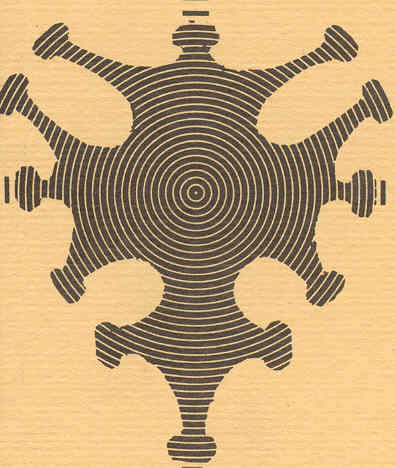

Signal & Communications Group
Institut de Recherche en Informatique de Toulouse (IRIT)
University of Toulouse, France

Menu:
Home
Overview
The research activities of the "Signal & Communications" group are currently divided into two main areas:
- Statistical signal & image processing: analysis and representation, inverse problems and computational imaging, machine learning
- Signal for communications: digital receivers, performance in real communication channels.
Short history
The ENSEEIHT Signal Processing group was created around 1968 (nobody really remembers!) by Jean-Claude Hoffmann and Bernard Lacaze. Its name, GAPSE, referred to "Group analyzing stochastic processes in electronics". GAPSE was part of the Electronics Laboratory (LEN7) of ENSEEIHT. Its founders chose the cross of Languedoc as emblem, such as it appears in a keystone of the cloister of the Jacobins (see opposite). In 1974, Francis Castanié joined the GAPSE and became his leader in 1978.
In 1989, Daniel Roviras, was hired as a Professor with activities centered around telecommunications. The group was renamed as "Signal, Image and Communications" (SIC), within the LEN7 that had been under the direction of Francis Castanié from 1983 to 1996. New members successively joined the group: Corinne Mailhes (1991), Jean-Yves Tourneret (1993) and Marie Chabert (1998).
In 1999, Francis Castanié founded a new collaborative laboratory, TeSA (Space Telecommunications and Aeronautics). The members of the SIC group working around the topics "signal" and "communications" moved to this new laboratory. The "Signal & Communications" (SC) group has been created, with Nathalie Thomas (2000) and Martial Coulon (2001) as new members.
Many collaborations between some IRIT members and the SC Group pushed it to apply for CNRS affiliation. The official agreement has been obtained in May 2002. The SC group has joined IRIT in the Department of "Signals and Images".
In 2004, Benoît Escrig, while Assistant Professor in ENSEIRB-MATMECA, asked to conduct his research activities within the SC group. In 2005, Marie-Laure Boucheret left ENST to join ENSEEIHT and to consolidate the Communication part of the SC Group. In 2008, Daniel Roviras moved from ENSEEIHT to CNAM Paris, and Bernard Lacaze retired. At the same time, Nicolas Dobigeon joined the group as an Assistant Professor. From 2009 to 2010, Marco Lops worked with the SC group as a Professor. In September 2011 and January 2012, Charly Poulliat and Herwig Wendt joined the group as a Professor and a CNRS Researcher, respectively. In September 2014, Thomas Oberlin was recruited as an Assistant Professor. From 2016 to 2018, Cédric Févotte, ERC Consolidator Grantee, and Emmanuel Soubies, joined the SC group as CNRS Senior Researcher and CNRS Researcher, respectively, while Jean-Yves Tourneret and Herwig Wendt moved to the IRIT-MINDS group. In 2020, Henrique Goulart and Elsa Cazelles joined the group as an Assistant Professor and CNRS Researcher.
From 2012, members of the SC group have been associated with the International Center of Mathematics and Computer Science (CIMI Lab. of Excellence), more recently as part of the Apprentissage Optimisation Complexité (AOC) project-team.
Some of the SC members are currently involved in the Artificial and Natural Intelligence Toulouse Institute (ANITI).
Contact
|
IRIT/INP-ENSEEIHT 2, rue Charles Camichel B.P. 7122 31071 Toulouse Cedex 7 FRANCE Google map / Access map |
Offices : F4XX (Building F - 4th floor) Tel: (+33) 05 34 32 22 25 Fax: (+33) 05 34 32 21 57 E-mail: Marie [dot] Chabert [at] irit [dot] fr www: http://sc.enseeiht.fr/ |